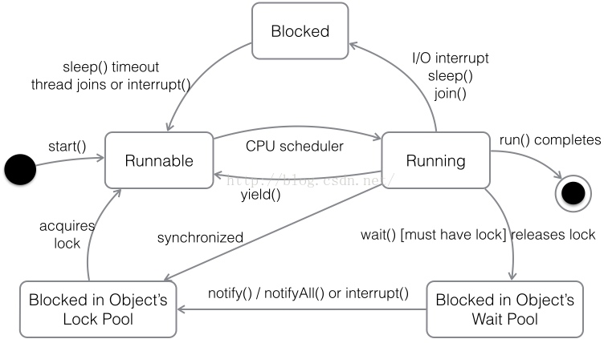

66、线程的基本状态以及状态之间的关系？

80、事务的ACID是指什么？
- 原子性(Atomic)：事务中各项操作，要么全做要么全不做，任何一项操作的失败都会导致整个事务的失败；
- 一致性(Consistent)：事务结束后系统状态是一致的；
- 隔离性(Isolated)：并发执行的事务彼此无法看到对方的中间状态；
- 持久性(Durable)：事务完成后所做的改动都会被持久化，即使发生灾难性的失败。通过日志和同步备份可以在故障发生后重建数据。
补充：关于事务，在面试中被问到的概率是很高的，可以问的问题也是很多的。首先需要知道的是，只有存在并发数据访问时才需要事务。当多个事务访问同一数据时，可能会存在5类问题，包括3类数据读取问题（脏读、不可重复读和幻读）和2类数据更新问题（第1类丢失更新和第2类丢失更新）。
- 脏读（Dirty Read）：A事务读取B事务尚未提交的数据并在此基础上操作，而B事务执行回滚，那么A读取到的数据就是脏数据。
- 幻读（Phantom Read）：事务A重新执行一个查询，返回一系列符合查询条件的行，发现其中插入了被事务B提交的行。
- 第1类丢失更新：事务A撤销时，把已经提交的事务B的更新数据覆盖了。
- 第2类丢失更新：事务A覆盖事务B已经提交的数据，造成事务B所做的操作丢失。
| 隔离级别 | 脏读 | 不可重复读 | 幻读 | 第一类丢失更新 | 第二类丢失更新 |
|---|---|---|---|---|---|
| READ UNCOMMITED | 允许 | 允许 | 允许 | 不允许 | 允许 |
| READ COMMITTED | 不允许 | 允许 | 允许 | 不允许 | 允许 |
| REPEATABLE READ | 不允许 | 不允许 | 允许 | 不允许 | 不允许 |
| SERIALIZABLE | 不允许 | 不允许 | 不允许 | 不允许 | 不允许 |